|

Clique
aqui para visitar o
Acervo de colunas


|
"O que se leva desta vida..." Por Luiz Castanheira
Pela janela se via uma bela jovem, lá pelos seus vinte e poucos anos, estava sozinha. O velho indagou o motivo da visita. "Pois não?" "Meu nome é Diane e venho fazer um trabalho para a faculdade, posso entrar para conversarmos melhor?" O velho examina o interior de sua casa, a si próprio e o rosto da jovem e após algum pensar decide abrir a porta. "Em que posso ajudar-te?" "O senhor é Luiz Castanheira, do Trek Brasilis?" Ele pensara nunca ser chamado assim de novo, era algo que o fazia se lembrar de uma época tão distante como se passada em uma outra vida, mas ao mesmo tempo próxima como a refeição que acabara de realizar. "Sou" "Eu quero entrevistá-lo." Tomando aos poucos consciência do surrealismo daquela situação, já com a jovem lhe apresentando a documentação pertinente, o velho homem apenas ficou parado e pensativo ali, por alguns momentos. "Você
deve entender a minha desconfiança a respeito das credenciais
de uma repórter que queira fazer uma reportagem comigo?
Não é nada pessoal ou algo assim." Já comodamente sentados e abastecidos com um bom suprimento da concorrente da Coca-Cola da época, começava a assim chamada entrevista. Enquanto a jovem observava a colossal bagunça de livros do quarto do seu anfitrião, este se decidira a desistir de adivinhar quando a "armação" (que tinha como certa devido ao inusitado da situação) seria revelada e "entrar no espírito da coisa", seja lá que "coisa" fosse esta. Concordou mesmo em permitir que a moça tirasse algumas fotos para documentar o encontro, além de gravar as perguntas e respostas. Aparentemente o telefone dela só faltava falar. "O meu orientador passou diversos temas para monografia, mas um me chamou a atenção em particular. A história de um antigo website a respeito de uma antiqüíssima série de televisão, algo feito completamente de graça, mas com uma seriedade e profissionalismo que até hoje impressiona. E digo "até hoje", pois de fato ele está no ar "até hoje"." "Como? Nós encerramos as atividades faz anos. Como ele pode ainda estar no ar?" "Aparentemente uma pessoa (talvez mais de uma) adotou o site e fez questão de mantê-lo no ar por anos a fio. Existe uma trilha de mais de uma dezena de servidores que hospedaram o site ao longo dos anos." "De fato, quando decidimos encerrar as atividades, determinamos que iríamos preservar o site no ar enquanto fosse possível e para nossa surpresa, alguém que nunca descobrimos "quem", passou a pagar anualmente pela manutenção do site. A realidade é que nunca quisemos de fato descobrir a respeito deste "benfeitor", parecia ser o certo a ser feito, mas nem em meus mais insanos sonhos eu podia imaginar que isto poderia continuar por tanto tempo. É simplesmente incrível. Toda a equipe do site ficou com a imagem integral do conteúdo do Trek Brasilis como uma recordação, mas saber que é possível que existam pessoas que até hoje o acessem é... [suspiro] Oh Boy!" "Começando a perceber o motivo de eu ter vindo aqui? O conteúdo do site é extenso demais, eu precisava de alguém para me oferecer uma base de trabalho e quem melhor que alguém que era parte da equipe? Eu preciso terminar esta monografia para me formar, afinal de contas." O velho já tinha a sua curiosidade de fato despertada e começava a não se importar se aquilo tudo era uma grande "charada organizada" ou não, na pior das hipóteses serviria para preencher uma tarde de folga, até que as eventuais visitas chegassem à noite. Ao mesmo tempo ele começava a notar uma certa familiaridade naquela jovem e uma quase certeza que o que fosse que ela estivesse fazendo ali, era feito por bons motivos. "O que você deseja exatamente e quanto tempo tem disponível?" "Quero que conte a respeito da história do TB, como se eu fosse alguém capaz de entender cada detalhe, como se eu fosse uma das leitoras daquela época. Não quero saber de uma cronologia passo a passo, quero saber das primeiras imagens e palavras que vierem a tua mente. Eu tenho tempo, meu carro está em uma vaga coberta." O velho então decidiu dar exatamente o que a sua visitante queria, por mais louco que pudesse soar o seu discurso a um não iniciado em Jornada, ele daria exatamente o que ela queria, no que de melhor a sua memória ajudasse. "É verdade. Eu estava lá, em 1999, no crepúsculo da franquia de Jornada nas Estrelas, numa época em que a idéia de um site como o Trek Brasilis era apenas algo imerso na mente de Salvador Nogueira. É curioso que um bando de apaixonados se junte para divulgar algo em amplo declínio. O contrário é muito mais comum, de fato é quase a regra. Devo confessar, entretanto, que o meu próprio interesse por Jornada também diminuiu com o tempo, abrindo espaço para o crescimento exponencial do meu interesse por Cinema. Apesar disto o meu amor pela Série Clássica e principalmente por Deep Space Nine foram mais do que suficientes para abastecer a minha participação no TB por todos os anos em que o site esteve em produção." A face do velho parecia ganhar aos poucos um novo brilho, como se o brotar destas memórias de alguma forma disfarçasse as suas rugas e escurecesse o grisalho de seus cabelos. "Você devia estar lá, no ápice do Trek Brasilis, em que éramos capazes de produzir material inédito, preciso e crítico sobre Jornada, semana após semana, frente a qualquer dificuldade e circunstância. Lembrando disto agora, a tarefa parece ser tão tremenda que beira o impossível e o assustador, mas de alguma maneira ela era realizada. Nós não tínhamos nada de especial enquanto indivíduos, dizer o contrário seria completamente faltar com a verdade, mas juntos tínhamos uma espécie de "centelha" que fazia de fato as coisas brilharem. Bons tempos aqueles em que, apesar de sermos tão diferentes, e pode me acreditar nós éramos de fato muito diferentes, ainda assim sentíamo-nos completamente à vontade para completar as idéias uns dos outros, como se elas fossem inicialmente nossas e propor as nossas idéias como se elas fossem de todos nós desde o nascedouro." "Uma coisa que sempre fizemos com orgulho foi dar crédito às pessoas e grupos responsáveis pela divulgação de Jornada no Brasil antes de nós. De acordo com que disse em certa ocasião o talvez mais inteligente dos homens: "nos apoiamos nos ombros de gigantes". Fascinante como as pessoas do fandom nacional que nos inspiravam acabavam sempre participando do site de uma maneira ou de outra, como se o TB tivesse uma capacidade natural de aglutinação que acabou por torná-lo muito maior do que a soma dos responsáveis por ele. Obviamente existiam alguns fãs descontentes com a postura do site, mas isto é algo cuja memória me traz hoje mais orgulho do que mágoa." "Por que então vocês decidiram encerrar as atividades?" "Em um determinado momento nós sentimos que, devido ao acúmulo de indicadores surgidos ao longo dos anos, o nosso objetivo original de fomentar o pensamento crítico e embasado em torno de Jornada havia sido atingido. Lembro de leitores que tinham dificuldade para identificar o nome de um ator e mesmo eram incapazes de escrever duas linhas logicamente encadeadas em nosso Fórum, tornarem suas presenças ao longo dos anos tão (ou mais) relevantes para a comunidade de fãs como um todo quanto qualquer um da equipe do próprio site. Não digo isto como espécie de testemunho de nossa grandeza, mas como uma forma de registrar o meu agradecimento àquelas pessoas por terem permitido que partilhássemos aqueles dias com elas. Acima de tudo, foi importante dizer adeus em uma época em que ainda muitos pediam pela nossa permanência, preservamos aquele legado, para o melhor e para o pior. Sem lamentos ou arrependimentos chegava à hora de deixar o TB para trás." "Muito bem. Gostaria de começar agora a entender os motivos que os levaram a realizar esta empreitada em primeiro lugar. Começando do "por que" do seu interesse por Jornada nas Estrelas." "Acho que só posso de fato responder por mim, mas espero que sirva de alguma maneira para ajudar a entender o estado de espírito dos demais também." "As duas idéias mais fortes que sempre associei a Jornada foram a de redenção (do indivíduo e da humanidade como um todo) e a de princípios sendo testados. A primeira é bastante simples, está relacionada ao conceito de uma terrível tempestade que se aproxima e se conseguirmos sobreviver a ela, os anos de calmaria "valerão a pena serem vividos". Do fato de que sempre irão aparecer tempestades, de tempos em tempos, vem a garantia que a vida progrida como ela tem que progredir. A outra se mostra ao colocar personagens extremamente éticos em honestas situações em que tais ideais podem ser postos verdadeiramente a prova. É fácil de perceber que justapôr estas duas idéias leva naturalmente ao conflito, propulsor do drama. Isto garante em um certo sentido a consistência interna de Jornada nas Estrelas e a sua relevância." "De um destes princípios, o da tolerância, e também do próprio cenário em que se passa a série, surge a principal mensagem de Jornada, o conhecido IDIC. Que aponta que: "A suprema glória da criação reside na Infinita Diversidade e na Infinita Combinação desta diversidade". Devemos abraçar as nossas diferenças, nossas diferenças nos fazem mais fortes e não mais fracos. Cabe observar novamente que tais diferenças levam ao conflito e daí a consistência dramática." "É comum o erro, a escritores, analistas e fãs de Jornada, de que a apreciação da marca é um processo em que predomina o intelectual ao emocional, o que não poderia ser mais distante da realidade. Ao esquecer desta simples verdade muitos escritores se perderam em meio ao cenário onde se passa a série, confundindo superfície com substância, se emaranhando em um fetiche estéril que marcou a decadência artística de Jornada. Favor não confundir "relevância" com alegoria ou premissa, o que via de regra soa forçado, transparente e automaticamente datado. Em suma, um episódio de verdadeira relevância se resume em síntese e lembrança a uma estrutura de pelos menos três bons momentos entre personagens (trágicos ou cômicos, não importa) e uma ausência de momentos de fato ruins. Jornada, eu insisto em lembrar, é algo sobre pessoas simples como eu e você e pessoas simples querem ouvir histórias sobre os seus pares, não sobre a "praga espacial da semana"." O velho parece agora cheio de energia, tão elétrico como se fosse se levantar e passar a declamar em um "inglês, britânico e impostado" algum famoso monólogo do velho bardo, mais curioso ainda ele executava periodicamente "puxões" em sua vestimenta, ajeitando-a, o que para sua interlocutora parecia um tanto... Peculiar. "Eu acredito então que desta sua particular visão de Jornada venha o seu maior apreço por esta ou por aquela série, por este ou por aquele episódio." "Perfeitamente." "Gostaria de saber agora, do "por que" da sua participação na equipe do TB." "Querer participar da divulgação de Jornada no Brasil foi sempre algo inerente ao meu gosto pela série e ao meu desejo em torná-la mais acessível (em diversos sentidos) aos demais fãs e potenciais fãs, como uma forma de retribuir ao que outros fizeram por mim anteriormente, este foi o motivo principal. Um outro motivo é que eu sempre gostei de escrever, e escrever sobre Jornada foi sempre uma experiência fascinante, pela complexidade e pela simplicidade do tema. E o terceiro, e talvez mais tolo, motivo é de que eu queria manter viva de alguma maneira aquela idéia da equipe de roteiristas de DS9. Sempre foi uma imagem inspiradora ver aquelas cinco pessoas maravilhosas sentadas na ponte da Enterprise original ("quanto mais as coisas mudam mais elas permanecem as mesmas", você sabe?) e principalmente nos momentos mais difíceis da vida do TB eu me lembrava "daqueles cinco patetas" e de algum modo o impossível não parecia mais tão inatingível assim." 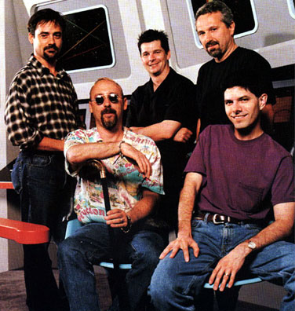 Da esquerda para direita, o staff de produo da srie: Ren Echevarria, Ira Steven Behr, Ron Moore, Hans Beimler e Robert Hewitt Wolfe (sentado) "Chegamos a um ponto importante. O senhor era responsável pela seção de DS9 do TB e nunca foi segredo que esta era a sua série favorita, então gostaria de saber: Por que Deep Space Nine?" "Eu acho que as duas grandes herdeiras da Série Clássica foram a série de filmes de Meyer & cia. para o Cinema e, é claro, Deep Space Nine, que foi sua herdeira natural na TV. DS9 também foi uma série do seu tempo, ainda que, no seu melhor, tratando de assuntos fundamentais e que sempre serão relevantes e atuais, enquanto o homem for homem. DS9 desafiou ao máximo o significado do que é ser Jornada nas Estrelas, ao mesmo tempo em que sempre abraçou a sua herança, talvez nisto resida a sua maior virtude e a origem da minha paixão por ela." "Eu trouxe fotos representando diversos episódios de DS9, gostaria que o senhor dissesse a primeira coisa que vem a mente ao ver cada uma destas imagens. A lembrança mais espontânea possível." "Pode começar a passar as fotos." HOURS CONCURS... "Trials and Tribble-ations" 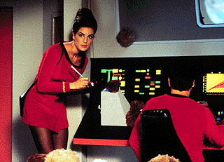 "A maior e melhor homenagem feita a Série Clássica e ao mesmo tempo um episódio tão ou mais genial do que o episódio homenageado. A forma com que a interação entre as tripulações foi concebida é particularmente brilhante." 31... "Past Tense I" 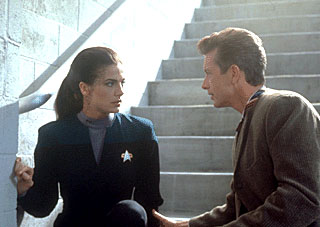 "A crueza dada ao tratamento do tema dos "abrigos" e de como eles se transformaram em verdadeiras prisões urbanas sempre me impressionou, assim como o caráter quase profético do roteiro de Ira Steven Behr e cia." 30... "The Quickening" 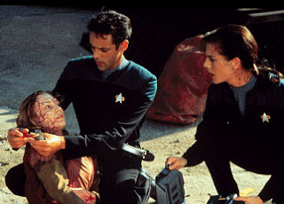 "A arrogância e a ingenuidade de Bashir são estilhaçadas de maneira brutal para só dai o bom doutor chegar a ser um herói, mas em circunstâncias realistas e de forma extremamente satisfatória." 29... "The Wire" 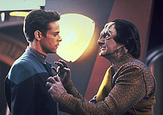 "Uma escrita tão brilhante que faz mentiras terem significado, serem "verdades". Melhor atuação de Robinson na série. Segmento incrivelmente lúcido com respeito ao tratamento em tela do problema do vício." 28... "Treachery, Faith, and the Great River" 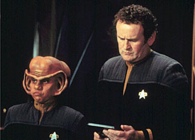 "É antológica a cena em que o clone defeituoso de Weyoum morre nos braços de Odo. A idéia do "Grande Rio Ferengi" é uma das mais brilhantes de toda a série." 27... "Whispers" 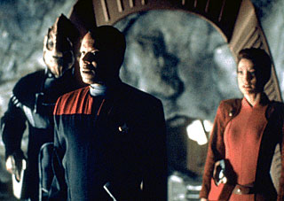 "Grande homenagem a Rod Serling. Um mistério, talvez o melhor de Jornada no gênero, que, fato raro, também funciona perfeitamente como drama." 26... "Homefront" 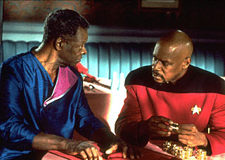 "Brilhante história sobre paranóia, mostrou-se cada vez mais relevante nos anos que se seguiram." 25... "Shadows and Symbols" 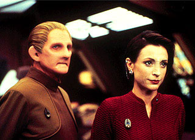 "A volta de Benny Russel foi incrível e surpreendente e a maneira como as três histórias do episódio atingiram simultaneamente a sua resolução foi extremamente empolgante." 23... "The Way of the Warrior" 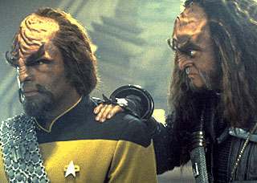 "Lembrado por muitos por suas grandes batalhas espaciais, porém sempre lembrado por mim por suas diversas e ótimas cenas com personagens, o destaque ficando para a conhecida "cena da cerveja" entre Garak e Quark." 22... "Crossover" 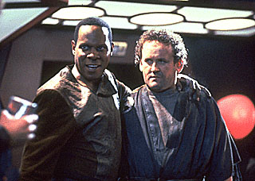 "Outra ponte de ligação com a Série Clássica. Brilhante direção, valores de produção convincentes, memoráveis atuações de Meaney e Brooks e uma absolutamente matadora Nana Visitor como a Intendente." 21... "A Time to Stand" 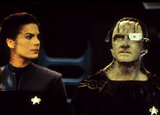 "Estabelece perfeitamente o tom da guerra com o Dominion e de como ela iria afetar os personagens." 20... "Nor the Battle to the Strong" 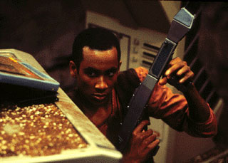 "Arriscado conto de guerra sob o ponto de vista de uma pessoa comum (Jake Sisko), extremamente original, honesto e tocante." 19... "Children of Time" 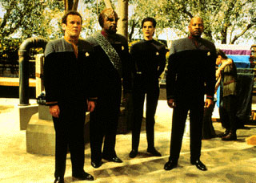 "Uma aula em como fazer um episódio envolvendo paradoxos temporais, para um máximo de efeito dramático. Fazer o futuro Odo sacrificar uma civilização inteira pelo seu amor por Kira foi colossal." 18... "Chimera" 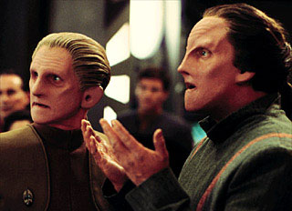 "Melhor história de amor de Jornada, seu final em que Odo se transforma em uma espécie de aurora boreal e envolve Kira celebrando o amor entre os dois é uma das imagens definitivas da série." 17... "Hard Time" 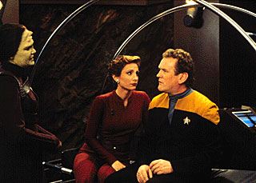 "Brilhante conto sobre humanidade. Meaney tem fantástica atuação e a cena final, em que Bashir convence O'Brien a não se suicidar, imortaliza a amizade entre os dois na história de Jornada." 16... "Inter Arma Enim Silent Leges" 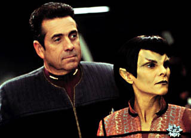 "Uma maneira irretocável de se combinar uma trama complexa com temas perturbadores. Bashir é perfeito como a reserva ética e moral da Federação." 15... "The Siege of AR-558" 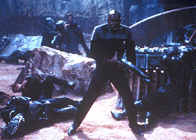 "A mais visceral história trazida pela guerra Dominion, uma experiência quase surreal que coloca uma face a cada distante e anônima baixa do conflito." 14... "The Changing Face of Evil" 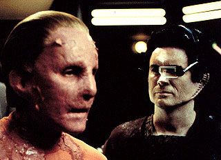 "Do ataque à Terra até a destruição da Defiant, um momento arrebatador atrás do outro. Deixo aqui um pequeno tributo aos ditos "vilões" de DS9, simplesmente inesquecíveis. A redenção de Damar foi uma brilhante idéia dos realizadores." 13... "Necessary Evil" 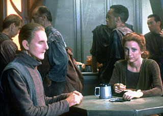 "Melhor exemplo de "Trek Noir". Excepcional escrita e execução com René Auberjonois literalmente "quebrando tudo" em duas épocas distintas como o comissário. A cena final em que Odo confronta Kira sobre o crime que ela cometera é definitivamente especial." 12... "In the Cards" 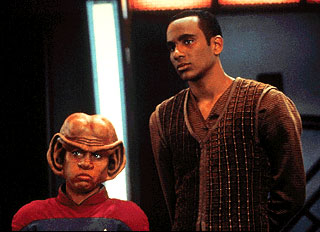 "Perfeita "dramédia". As duas idéias que mais ressonam pessoalmente são a dos "efeitos colaterais da bondade" e é claro daquela que diz que: "mesmo no coração da escuridão sempre existirá algo que o fará sorrir"." 11... "Rapture" 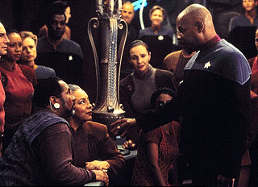 "A jornada espiritual de Sisko sempre foi algo central para a série e um dos elementos que a definiu e a diferenciou das demais. É fascinante como Brooks consegue vender a experiência das suas visões sem necessidade de imagem alguma. Extremamente inteligente e emocional." 10... "Far Beyond the Stars" 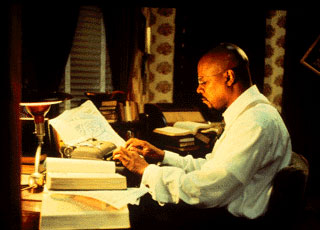 "É o episódio que eu gostaria de ter escrito, simples assim. Alguns acreditam até hoje que esta história é sobre o racismo, o que não poderia ser mais incorreto. A cena final é o mais perto de real mágica que Jornada jamais chegou." 09... "Rocks and Shoals" 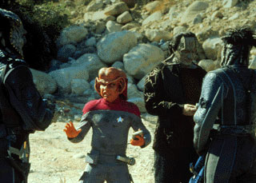 "Quando os "vilões" se tornam tão complexos que começamos a lamentar por suas mortes, temos a certeza do surgimento de mais um clássico. Isto é dilema humano no seu melhor. Na estação, a indignação de Kira por perceber estar se transformando em uma colaboradora também é extremamente potente." 08... "In Purgatory's Shadow" 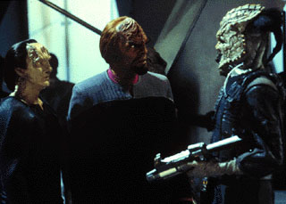 "Incríveis reviravoltas (incluindo a definitiva traição de Dukat no horizonte), diálogos e brilhante execução cedem lugar na memória para a cena da morte de Enabran Tain, em que Garak pede que o velho Cardassiano admita na hora derradeira que ele era de fato o seu pai. De cortar o coração." 07... "Call to Arms" 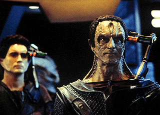 "Provavelmente o episódio todo merece destaque. Mas principalmente a tensa conversa entre Weyoum e Sisko, o inesquecível discurso de despedida de Sisko, Dukat encontrando a bola de beisebol de Sisko (como um aviso de que o capitão iria retornar) e a tomada final da Defiant e da Rotaran se encontrando com a força tarefa Federada." 06... "The Visitor" 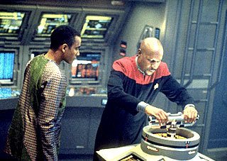 "Talvez o mais emocionante episódio de todas as Jornadas. Retratando talvez o mais verdadeiro relacionamento (Ben e Jake) de todas as série de Jornada. Uma direção virtuosa, uma música assombrosa e um texto que parece uma antologia, elogios nunca serão suficientes para este completo e absoluto vencedor." 05... "Tacking into the Wind" 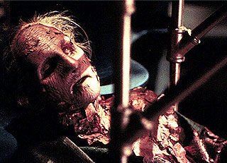 "O último clássico da série. Destaques: conversa entre Ezri e Worf em que a Trill diz que o Império Klingon merece morrer, Worf matando Gowron e entregando o cargo de chanceler a Martok e o tenso confronto em que Damar tem que matar um velho amigo para que Cardassia ainda tenha uma chance de sobreviver. Fala inesquecível (de Kira): 'Que tipo de Estado tolera o assassinato de crianças e mulheres inocentes?'" 03... "Improbable Cause" & "The Die Is Cast" 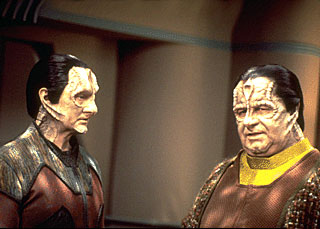 "A própria definição da perfeição em termos de escrita, com uma execução não menos legendária. A solidão compartilhada por Odo e Garak é infinitamente tocante e a cena final de "The Die Is Cast" permanece como a minha favorita de todas as Jornadas." 02... "Duet" 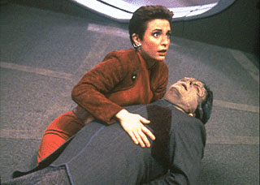 "'O primeiro clássico a gente não esquece', diriam alguns. Episódio que transformou muitos fãs ocasionais em Niners convictos. Brilhante alerta sobre os perigos das generalizações. Kira se desenvolveu mais neste único episódio do que inúmeros personagens das demais séries em centenas. Harris Yulin foi provavelmente o melhor ator convidado de todas as Jornadas." 01... "In the Pale Moonlight" 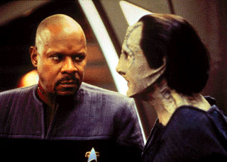 "A obra prima da série. Poucas horas de TV que já vi na vida têm a intensidade deste segmento. De fato "não se pode ir para a cama com o Diabo sem ter sexo com ele", como diria o ator de Garak, Andrew Robinson. Fala inesquecível (de Sisko): 'Se eu tivesse que fazer tudo novamente, eu faria!'" "Do que o senhor mais lembra da série?" "Das pequenas coisas, das palmas invertidas Bajorianas, da imagem de uma bola de beisebol assinada pelos amigos, de Morn sentado na ponta do bar, Bashir e O’Brien saindo ou entrando em uma holo-suite com alguma fantasia ridícula, de Sisko cozinhando e fazendo alguma piada com seus vegetais favoritos, de Vic Fontaine cantando "The Way You Look Tonight"... Talvez este seja o único teste que seja válido de verdade, se em um dia triste e difícil a lembrança lhe trouxer algum conforto, alguma luz, é sinal que a obra foi feita por pessoas que se importavam, que teve significado." Neste momento, o homem para um pouco para molhar a garganta. Falar de tantas coisas pessoais em um sentido ou outro para uma (até que se prove o contrário) completa estranha pareceria errado para qualquer um que visse a cena de fora, mas enquanto falava ele notava no semblante da jovem que grande parte do que dizia tinha ressonância nela sim e que claramente, mesmo que o trabalho da faculdade não fosse uma invenção, ela não estava contando toda a história. E para o homem isto simplesmente não importava. "Houve um momento particularmente difícil no TB?" "Eu me lembro do ano de 2003, por diversos motivos tanto o Salvador quanto eu estivemos muito ausentes da administração do site naquela época e devemos muito ao Fernando Penteriche por ter carregado o piano naqueles momentos difíceis. Mas devo dizer que também foi um ano de boas lembranças, na esteira do aniversário de quatro anos do site e da cobertura-monstro da vinda do ator Leonard Nimoy ao Brasil, recebemos um número recorde de e-mails nos felicitando pelo trabalho e nos apoiando para darmos continuidade aos nossos esforços. Algo que talvez nunca tenhamos agradecido o suficiente. De fato certos elementos que surgiram justo naquele ano nos permitiram dar vôos cada vez mais ousados em anos seguintes." "O senhor ainda pensa neles?" "É claro, não existe maior aventura que lembrar dos grandes amigos." "Acho que já tenho material suficiente, podemos parar por aqui." "Muito bem. Vou deixar a bandeja na cozinha e já volto." Alguns minutos depois, já na varanda da casa os dois sentem o cheiro da terra molhada, não caia mais água do céu. "Quem é você, Diane?" "Uma amiga. Pelos menos eu gostaria de ser. Conhecer você foi como rever um antigo e querido amigo." "Espero que tenha encontrado o que veio procurar aqui." "Eu realmente espero que sim. Obrigada por tudo e é claro... Feliz aniversário!" A jovem lhe dá um beijo na face e parece lhe dizer com os expressivos olhos que talvez esta não seja a última vez que os dois venham se encontrar. Ela dobra a esquina a pé e momentos depois retorna dirigindo um improvável Fusca conversível. Ela acena e parte, o homem responde ao aceno, existe grande satisfação no seu semblante. De volta ao interior da casa, que agora parece mais dele do que velha, ele tem o pensamento de tomar um banho e esperar por eventuais campainhas. Mas um pedaço de papel em cima do teclado do seu computador pessoal lhe chama a atenção, não é difícil de adivinhar do que se trata. Ele acreditou na moça, a partir de um certo ponto, sem pestanejar, por que parecia a coisa certa a fazer, para os dois. Alguns toques de teclado depois e uma checagem para saber se o drive de disco estava realmente vazio, chegava a tela uma imagem tão familiar, tão querida. E não somente parecia com o que ele se lembrava, tudo funcionava como sempre funcionara, e à medida que navegava naquele velho amigo, uma "melodia de McCarthy" enchia a sua mente e páginas de html se tornavam como as de um álbum de recortes. E pela primeira vez em muito tempo ele se sentiu jovem, como quando o mundo era novo. "... é o que se deixa para trás." |
 Muitos
e muitos anos no futuro, em um começo de tarde na cidade
do Rio de Janeiro, uma tarde de intenso verão, tarde
daquelas que acham fim em forte chuva. Na velha casa, um único
e gasto morador, daqueles que aparentam muito mais que a real
idade, alguém que, lembrando ironicamente de uma adorada
imagem da juventude, lamenta ter desistido da prática
do xadrez, algo que talvez servisse para angariar um pouco
mais de tempo. Agora, justo agora, que jaz há muito
derrotado o seu senso de imortalidade e cada reflexão
sobre sua vida traz embutido o temor de ser a definitiva.
Tais pensamentos pareciam por demais apropriados naquele dia,
mas ainda assim seriam facilmente derrotados pelo sono se
alguém não tocasse providencialmente a campainha.
Muitos
e muitos anos no futuro, em um começo de tarde na cidade
do Rio de Janeiro, uma tarde de intenso verão, tarde
daquelas que acham fim em forte chuva. Na velha casa, um único
e gasto morador, daqueles que aparentam muito mais que a real
idade, alguém que, lembrando ironicamente de uma adorada
imagem da juventude, lamenta ter desistido da prática
do xadrez, algo que talvez servisse para angariar um pouco
mais de tempo. Agora, justo agora, que jaz há muito
derrotado o seu senso de imortalidade e cada reflexão
sobre sua vida traz embutido o temor de ser a definitiva.
Tais pensamentos pareciam por demais apropriados naquele dia,
mas ainda assim seriam facilmente derrotados pelo sono se
alguém não tocasse providencialmente a campainha.